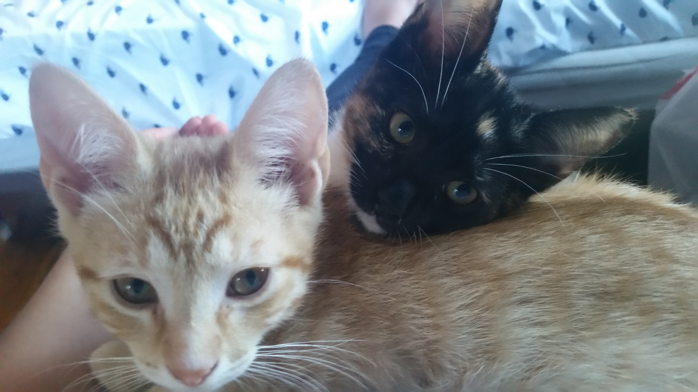

Pippy and Joey were siblings in a litter born in a garage to a stray cat. They had a third sister, another calico, that got adopted by another mother, but these two didn't have a home, so they went home with mom. After a very long car ride home, they settled in quickly and began to explore their new home.
When their favorite kicker toy tore, Joey decided to go all the way and tear out the inside. What he quickly discoveredwas that the inside of the fish had something much more delectable than fish guts - CATNIP! It was mearly a small fabric lining away from being theirs! So they tore open the bag and poured their well deserved prize all over the carpet to enjoy it. Just in time for mom to come home and see their kill.